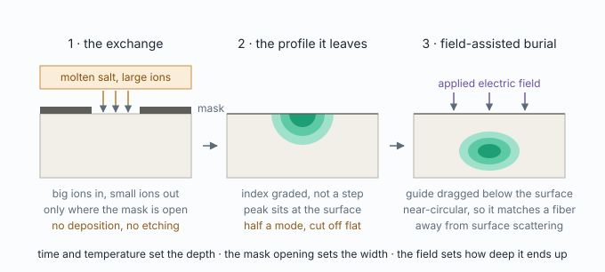
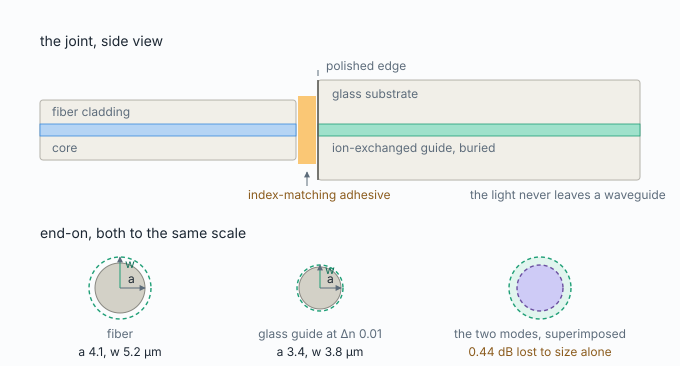
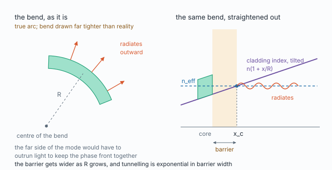
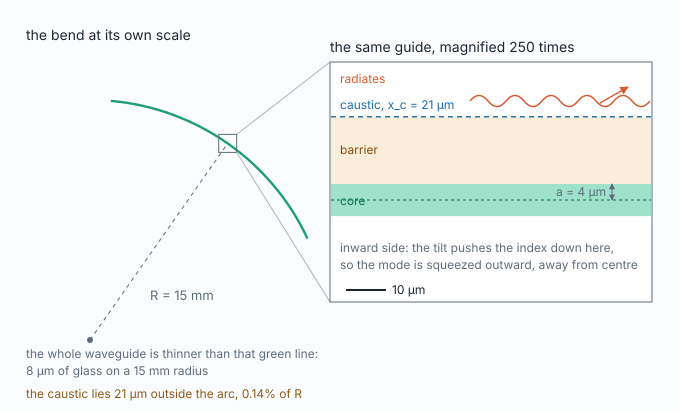

Look at what is not in that picture: no deposition, no etching, no second material. An alkali ion sitting in the glass network, usually sodium, is swapped for a larger one from a molten salt bath, and the region where that happened has a slightly higher refractive index. That is the entire process.
The index rises for two reasons: the larger ion is more polarizable, and forcing it into a site sized for a smaller one puts the network under stress. A potassium-for-sodium exchange gives a Δn of roughly 0.01. Silver for sodium gives ten times more, at the cost of optical loss and silver chemistry that has to be controlled.
| index contrast | mode size | |
|---|---|---|
| SMF-28 fiber | Δn ≈ 0.0067 | 10.4 µm at 1550 nm |
| IOX glass waveguide | Δn ≈ 0.005 to 0.01 | 6 to 10 µm |
| silicon waveguide | Δn ≈ 2 | 0.5 µm |
The concentration of the incoming ion obeys Fick's second law, with the added complication that the diffusivity depends on local concentration, since the two species move at different rates and drag one another. The scaling that matters is the familiar one:
Depth is set by time and temperature, and quadrupling the time only doubles the depth. Typical exchanges run for hours at a few hundred degrees. Same arithmetic as a dopant drive-in, and the same Arrhenius sensitivity: a few degrees of furnace error moves the waveguide.
Diffusion has no sense of direction. Ions entering through an opening of width W spread sideways under the mask at very nearly the rate they travel downward, so by the time the front reaches depth d it has also crept about 0.8d under each mask edge:
This is the same lateral diffusion that makes a doped region in silicon wider than the window opened for it. Three consequences follow.
| Knob | Sets |
|---|---|
| melt composition | Δn |
| time × temperature | depth and width |
| burial field × time | how deep, and how round |
Temperature controls how far the ions get, not how many of them swap. Surface concentration, and therefore Δn, is fixed by the melt composition however hot the furnace is. To halve Δn you do not change the furnace program, you dilute the bath with sodium nitrate so the two species compete and fewer sites end up exchanged. The partition between melt and glass follows an equilibrium with its own selectivity coefficient rather than a straight line, so the exact ratio comes from calibration rather than from a formula.
This near-independence is the whole reason glass ion exchange is used for fiber-matched waveguides. The index contrast can be dialled to fit a fiber mode without giving up control of the geometry. In silicon, Δn is whatever silicon and oxide happen to be.

Coupling is an overlap of fields. The integral has no term for core radius. Two guides with completely different cores couple perfectly if their modes match, and two with identical cores couple badly if their modes differ.
Worked at 1550 nm for a guide made with a straight potassium exchange at Δn = 0.01, taken to the largest size that is still single mode:
Against a 0.5 dB budget for the entire connection, that design is dead before a single micrometre of tolerance has been spent. And the obvious fix does not work: forcing the core to match the fiber's 4.1 µm at Δn = 0.01 gives V = 2.88, so the guide is no longer single mode.
Once V is fixed, w/a is fixed, because that is what Marcuse's formula says. Substituting the cutoff condition into it eliminates the core radius entirely:
Match w and match V, and a matches automatically. The real design freedom is which V to operate at. Not the cutoff, where a few degrees of furnace drift tips the bridge into carrying a second mode, and not far below it, where the guide becomes too weakly confining to route. Around V = 2.0, which is where SMF-28 itself sits.
Step 7 is what makes this engineering rather than arithmetic. Coupling pushes Δn down, routing pushes it up, and the design sits where they meet.
Their published figures, which are worth holding against the derivation above. The ion-exchanged waveguides were "designed to match the mode field of a Corning SMF-28 Ultra Optical Fiber at 1310 nm", with propagation loss below 0.1 dB/cm. Fiber-to-waveguide coupling loss is quoted at 0.3 dB with air above the guide and 0.1 dB with an index-matched adhesive top cladding at 1310 nm, rising to 0.6 and 0.2 dB at 1550 nm.
With Δn chosen perfectly there is still residual loss from:
A bend of radius R is mathematically equivalent to a straight waveguide whose refractive index is tilted. This is a conformal transformation, not an approximation of convenience: all the curvature disappears into a ramp.
with x measured outward from the centre of the bend. Everything then follows by inspection. The mode has one effective index. Out on the tilted cladding the index climbs, and where it climbs to meet n_eff the light is no longer travelling through a medium slower than itself, so it stops being bound:

The full derivation from Maxwell's equations, in thirteen steps with what each one means, is on its own page: From Maxwell to bend loss.
Between the edge of the core and x_c the field is evanescent; beyond it the field propagates freely. That is a potential barrier with a continuum on the far side, and the mode leaks through it exactly as an electron leaks out of a quantum well. Substituting the tilted index into the scalar wave equation gives a linear potential, whose solutions are Airy functions:
where γ² = β² − k₀²n₂²
is the ordinary cladding decay constant of the straight guide. The bracket
vanishes at x_t = γ²R/(2k₀²n₂²),
which reduces to the same x_c as the geometric argument gives. The wave equation
and the picture agree, which is the first thing to check.
WKB then gives the transmission through the barrier as
exp(−2∫κdx), and since tunnelling is exponential in
barrier width while barrier width is proportional to R:
(2/3)·γ³R/β², which is Marcuse's 1976
curvature-loss result, derived here from the conformal picture alone.
Exponential means a cliff rather than a slope. Increase R slightly and the loss falls by orders of magnitude; decrease it slightly and the guide hemorrhages. That is why every platform is specified with a minimum bend radius rather than a loss-versus-radius curve: the curve exists but only one point on it is useful.
Since γ ∝ √Δn and
x_c ∝ R·Δn, the exponent goes as
R·Δn^1.5. Holding the loss fixed:
| Platform | Δn | Practical minimum bend radius |
|---|---|---|
| silicon | ≈ 2 | ~5 µm |
| silicon nitride | ≈ 0.55 | ~50 to 100 µm |
| IOX glass | 0.005 to 0.01 | ~10 to 25 mm |
| standard SMF patch cord | ≈ 0.0067 | ~30 mm |
The last row is checkable against everyday objects: the minimum bend radius printed on any fiber patch cord is this physics and nothing else. And bend-insensitive fiber works by placing a low-index trench in the cladding just outside the core, which pushes the cladding index down exactly where the tilt is trying to bring it up, moving x_c outward and widening the barrier.

Sixteen channels leaving an MPO connector and fanning out to a die footprint need S-bends, and each costs a centimetre or two of substrate. The coupling requirement set Δn, Δn set the bend radius, and the bend radius set the physical size of the assembly. The glass part of a co-packaged optics package is a board rather than a chip because of one number at the fiber joint.
Corning report below 0.1 dB/cm at 1310 nm. Worth placing that between the two things you already know: an etched silicon waveguide runs a few dB/cm, and optical fiber runs 0.2 dB per kilometre. So an ion-exchanged glass guide is roughly twenty times better than silicon and four orders of magnitude worse than fiber.
The reason it beats silicon is the same fact that opened this stage: there are no etched sidewalls. In an etched waveguide the dominant loss is scattering from sidewall roughness, and it rises steeply with index contrast because more field sits at the wall. An exchanged guide has no wall. Its boundary is a diffusion profile, which is smooth by construction. No deposition and no etching turns out to be a loss argument as much as a cost argument.
What is left, in rough order:
Forcing a large ion into a site sized for a small one leaves the exchanged region in compression and its surroundings in tension. Through the photoelastic effect that stress makes the guide birefringent: TE and TM see different effective indices.
The magnitude is typically 10⁻⁴ to 10⁻₃, which against a Δn of 0.005 is between two and twenty percent of the guiding contrast itself. Not a rounding error.
Consequences, all of which are specified quantities on a real datasheet:
Three levers, each with a cost:
Two parallel guides exchange power through the overlap of one's evanescent tail
with the other's core, and that tail decays as
exp(−γx). For the glass guide solved earlier, with
Δn = 0.005 at V = 2.0:
exp(−0.32 × 250) = exp(−80), around
10⁻³⁵, and the coupled power goes as the square of
that.
So no. Not remotely. The number is so far beyond negligible that it stops being a design consideration at all. The 250 µm pitch is inherited from the fiber connector, not chosen for isolation. Guides in this platform could be packed at thirty to fifty micrometres and still be isolated over centimetre-scale parallel runs.
Which reframes what the fan-out on the glass is for. It is not there to separate channels for crosstalk reasons; it is there to convert the connector's mechanical pitch into whatever pitch the die wants, using bends whose radius is set by the physics two sections above.
The whole stage in eleven statements. If any of them is not obvious, that is the section to reread.
√(Dt), and lateral diffusion makes the
guide W + 1.6d wide, so depth and width are not
independent.w_max = 0.652/NA and the only
way to enlarge the mode is to weaken the guide.R ∝ Δn^(−3/2).Because at a given Δn the core size is capped by the single-mode condition. Matching the fiber's 4.1 µm core at Δn = 0.01 gives V = 2.88, above cutoff, so the guide carries a second mode. Coupling is decided by the modes, not the cores, and the core is not free to move independently.
The bath. Temperature sets how far the ions diffuse, not how many sites exchange. Dilute the melt with sodium nitrate so the two species compete.
Because the loss is unstable. Power divides between LP01 and LP11 depending on bend, temperature and how the fiber was placed, and only the LP01 share enters the chip. A link whose insertion loss wanders cannot be specified.
About 2 + 1.6×5 = 10 µm. Lateral diffusion under the mask edges dominates the final width once the depth exceeds the opening.
Because it is a tunnelling process. The mode escapes through a barrier between the core edge and the radiation caustic, the barrier width grows in proportion to R, and tunnelling probability falls exponentially with barrier width.
No etched sidewalls. Sidewall roughness scattering dominates loss in etched waveguides and rises steeply with index contrast. A diffused boundary is smooth by construction.
No, by an enormous margin. The field decay length is about 3 µm, so at 250 µm the overlap is of order exp(−80). The pitch comes from the fiber connector, not from isolation.
Increased the minimum bend radius by about 2.8×, since R scales as Δn^(−3/2). Every S-bend in the fan-out grows accordingly, and the board grows with them.